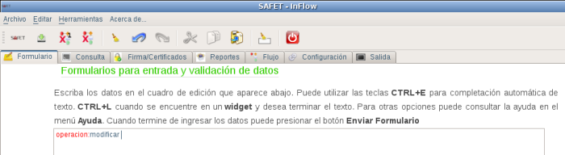
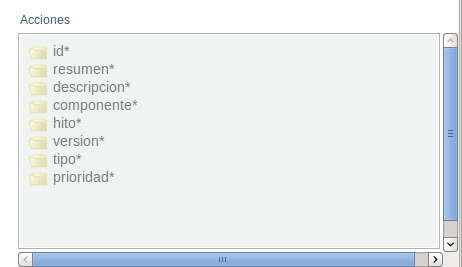
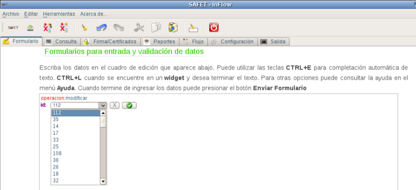
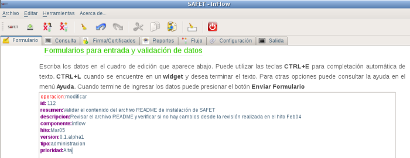
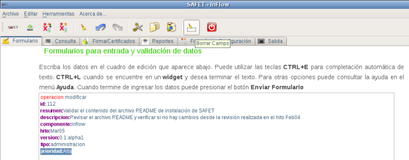
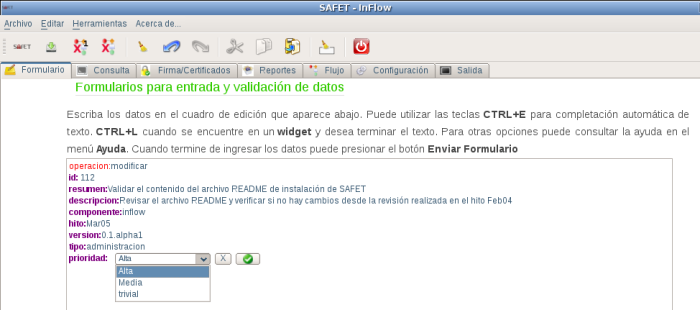

operacion:modificar y el área cuadro de edición se agrega la linea de texto operacion:modificar (ver figura S3.1.2-1) y en el menú inteligente se despliega los campos relacionados con esta operación (ver figura S3.1.2-2)

operacion:modificar
Para modificar un ticket, se debe saber el número identificador (id) del ticket a modificar, se hace click sobre el campo id* del menú inteligente, en el área cuadro de edición se debe agregar la linea de texto id: con un botón de selección donde se debe indicar el id del ticket a modificar (ver figura S3.1.2-3)

Una vez seleccionado el número de identificación del ticket a modificar, se presionado el botón
Se despliega toda las información sobre el ticket (ver figura S3.1.2-4)

luego debe seleccionar el campo a modificar (resumen, descripción, componente, hito, version, tipo y prioridad) del cuadro de edición y procede a borrar el campo haciendo click en el botón borrar campo

Luego que se a borrado el campo se procede a seleccionar del menú inteligente, el campo que fue eliminada e ingresar de nuevo el campo con sus respectivas modificaciones. (ver figura S3.1.2-6)

Una vez ingresado el campo con las modificaciones se procese a darle click al botón
Si se quiere modificar otro campo del ticket se procede de la misma manera. Una vez realizado las modificaciones del ticket se procede a enviar, haciendo click en el botón enviar
Para verificar si los cambios fueron almacenado puede consultar el ticket y chequear los campos